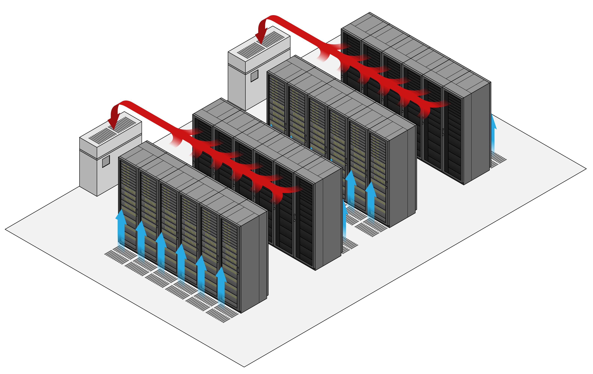

¿Queres aprender? Quedate acá
¿Que es un data center?
Un data center es una sala llena de equipos de IT
¿Y que hace?
Los data centers se pueden usar para muchas funciones desde servicio de telefonía, televisión, GPS, servicio de internet, almacenamiento de datos, procesamiento de información, cálculos y todo servicio que necesite de algun programa o servidor para funcionar. ¿Te has preguntado donde vive la internet? pues vive en los data centers ya que la internet como bien lo describe la palabra es una red internacional de computadoras interconectadas donde cada computadora tiene una o varias paginas webs o servicios o aplicaciones, en el mundo de los datas esas computadoras son llamados servidores de IT.
¿Y como estan compuestos?
Los datas están compuestos de muchas maneras, por lo general suelen tener racks de IT equipos de aire y tableros, pero los hay de distintos tipos, como pueden ser schelters, confinados, de alta densidad, de telecomunicaciones, etc.. el tipo de data center definirá como serán sus equipamientos.
Veamos un poco los distintos tipos
Tipo Schelter: es el tipo de data center que viene encapuslado en un contenedor, alli esta todo lo que el data neceista sus racks, UPS, Frio, y Energía suelen ser soluciones muy utilizadas en zonas remotas donde construir edificios no es tan viable.
Tipo Confinado: Este tipo de datacenter se contruye de tal manera que se confina 1 de sus pasillos, puede ser frio o caliente, esto se hace para mejorar la calidad del flujo de aire ya que al encerrarlo evitamos que el aire se disperse y perdamos eficiencia.
Tipo Telecomunicaciones: Estos data center se especifican por usar tension continua en 48v es muy comun que tambine esten en Schelters y en general aqui los racks de IT usan exclusivamente equipo de comunicaciones y no tanto procesamiento o storage lo que los hace muy grandes debido a la cantidad de fibras y cables de cobre que se utilizan.
Pasemos a explicar un poco los distintos efectos que puede sufrir un data.
Así es como funciona el normal flujo de aire de un datacenter.
El aire proviene de abajo del piso e ingresa en pasillo frío, luego es succionado por los equipos de IT y al pasar el aire por los CPUs el mismo se calienta y sale hacia el pasillo caliente.
Normalmente ese aire caliente es recolectado por un equipo de frio que esta en la sala donde vuelve a ser enfriado e inyectado debajo del piso.
¿pero que pasa cuando el flujo se obstruye?
Como nos muestra la imagen de la derecha se presentan puntos calientes, es por eso que es muy importante en un data center siempre tener en cuenta el buen manejo de flujo, para saber como puedes hacer para evitar estos problemas de flujo, suscribete a nuestro newsletter donde podrás ver mas contenido y soluciones especificas
A contunación te mostramos como se diagrama una sala de data center
Esto es una sala de Data Center puedes ver en ella como se diagraman los aires y los racks de IT
Como habras visto los aires acondicionados se encuentran colocados en forma perimetral, el flujo de aire se inyecta bajo piso, entra al pasillo frio, pasa por el IT y luego vuelve hacia el equipo de frío, esta solución es la mas tradicional de todas.
Esperamos que esta información te haya sido interesante recuerda que si quieres recibir mas info como ésta te puedes anotar a nuestro Newsletter donde recibirás informacion de forma semanal ¡Que tengas un excelente dia!